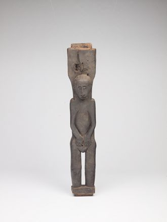
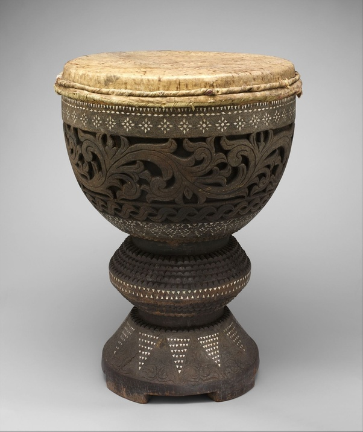

Katutubo Collection
Textiles
Kalinga
₱150.00
Hablon
₱250.00
Mabal Tabih
₱200.00
Pis Syabit
₱250.00

T'Nalak
₱250.00
Basketry
Balyag
₱350.00
Inabnutan
₱700.00
Iwus
₱250.00
Kamuwan
₱200.00
Kalikug
₱150.00
Physical Ornament
Boaya
₱250.00

Dukaw
₱250.00
Kattagang
₱250.00
Suklong
₱250.00
Tangkil
₱250.00
Traditional Instruments
Bandurria
₱250.00
Kulintang
₱250.00
Kudyapi
₱250.00

Dabakan
₱250.00
Kolitong
₱250.00